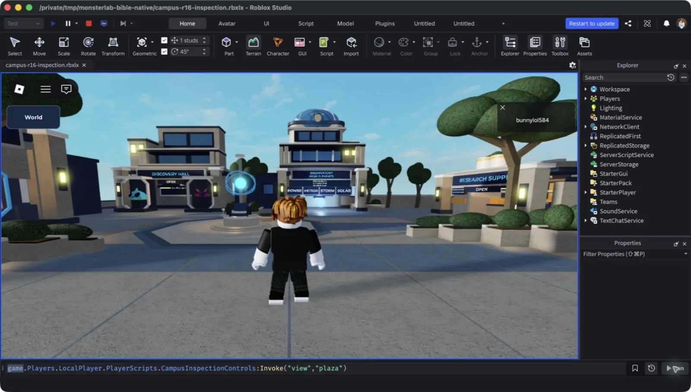
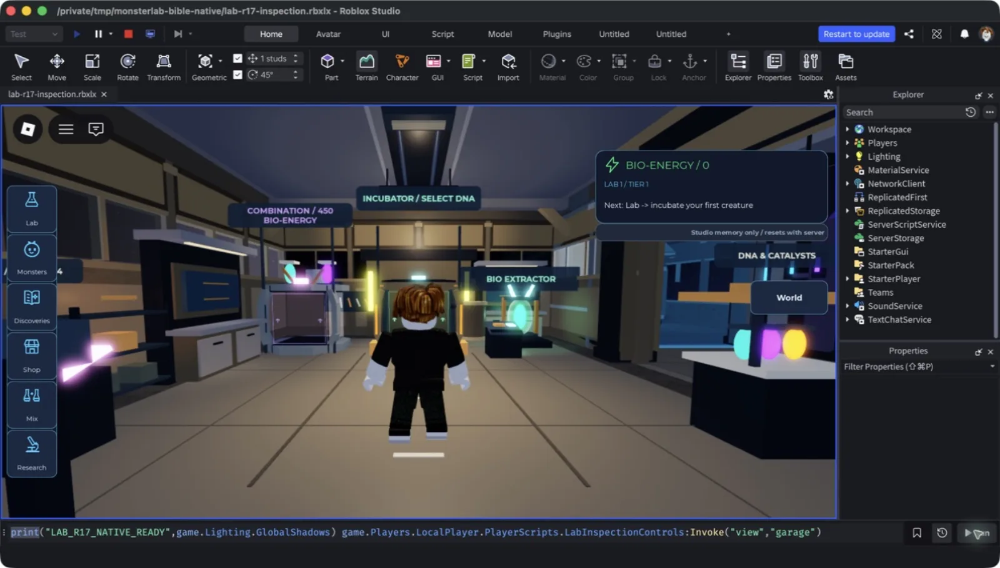

Game · Roblox · Luau
Monster Lab
Create monsters, discover interactions, and build a lab whose layout changes what you can make.

01 Problem
Most creature-collection games separate the collecting from the place: the lab is a menu. I wanted the laboratory itself to be the progression system — a facility whose wings, machines, and layout gate what you can discover, with a social campus around it for showing off what you made.
02 Approach
The game is a 48-discovery content graph over twelve base families, four tiers, five machines, six catalysts, and four scheduled events — all data-driven, with gameplay, economy, and progression gates frozen while the world is built. A Central Campus social hub (transit, discovery hall, observatory, supply, directory, exchange) surrounds a Personal Lab that grows from a warm improvised Garage through Research and Mutation wings to a dark Forbidden chamber.
Profiles are deterministic and fenced (leases, crash recovery from committed checkpoints, bounded offline progress), and travel between the two places uses destination-bound tickets with cancellation recovery. The current art phase builds a reusable environment kit first — chunky modular industrial-science forms, restrained PBR surfaces — and applies it to both worlds, with native Studio captures and independent review at every checkpoint rather than author judgment alone.

03 Tech stack
Game
Quality
Art
04 Outcome
48
discoveries across twelve base families, four tiers, and five machines
46
Lune suites plus formatting, lint, type analysis, and three Rojo builds green
Gameplay systems are implemented and exercised with two-client Studio fixtures (admission, travel cancellation, production, events). The environments are an honest gameplay blockout / advanced programmer art — native captures, frame samples, and walking fixtures are recorded as evidence, and full-world art acceptance stays open until the kit application passes review. No experience publication yet.